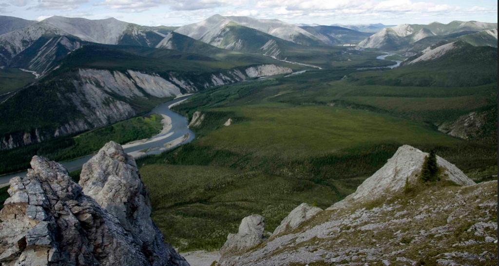

Cenário H: Gestão de bacias hidrográficas


Imagem: © www.protectpeel.ca, CC BY-NC

Ao longo de vários anos, pesquisadores dos Departamentos de Gestão de Terras e de Silvicultura da Universidade do Oeste do Canadá desenvolveram uma gama de recursos digitais como ilustrações, modelos informáticos e simulações sobre gestão de bacias hidrográficas, em parte decorrentes de investigações científicas do corpo docente e em parte com o objetivo de captar financiamentos para novas pesquisas.
Numa reunião de departamento realizada há alguns anos, após debate complexo, os docentes aprovaram por margem estreita a disponibilização pública destes recursos em regime de reutilização educativa sob licença Creative Commons. Esta licença impõe a atribuição de autoria e veda a utilização comercial sem autorização específica por escrito dos detentores dos direitos autorais (os docentes que criaram os materiais).
O fator decisivo para a aprovação prendeu-se com o interesse da maioria dos pesquisadores envolvidos no projeto em alargar o acesso aos recursos. As entidades financiadoras da investigação (predominantemente conselhos nacionais de pesquisa) acolheram de forma favorável a transição destes materiais letivos para o formato de recursos educacionais abertos (REA).
Inicialmente, os pesquisadores limitaram-se a alojar os grafismos e as simulações na página web do grupo de investigação. Cabia a cada docente decidir sobre a sua integração nas disciplinas. Com o tempo, as ferramentas foram introduzidas de forma progressiva em diversas disciplinas presenciais de graduação e pós-graduação no campus.
Após algum tempo, a divulgação dos REA alargou-se. A equipe começou a receber e-mails e contatos de pesquisadores de diversos países. Ficou evidente a existência de uma rede internacional de especialistas da área a produzir materiais digitais decorrentes das suas pesquisas, justificando a partilha e reutilização recíproca dos recursos. Esta dinâmica culminou na criação de um portal internacional de recursos letivos sobre gestão de bacias hidrográficas.
Os pesquisadores começaram igualmente a ser contatados por ministérios e departamentos de ambiente, coletivos ambientais locais, comunidades indígenas e, pontualmente, grandes empresas do setor extrativo, resultando em consultorias para o departamento. Em paralelo, a equipe captou financiamento de organizações não governamentais (como a Nature Conservancy e grupos ecológicos), bem como dos conselhos nacionais de pesquisa tradicionais, para a produção de novos REA.
Nesta fase, o departamento dispunha de um volume significativo de REA. Foram estruturadas duas disciplinas totalmente on-line de nível avançado com base nestes recursos, lecionadas com sucesso a estudantes de graduação e pós-graduação. Foi então formulada a proposta de criar uma especialização de pós-graduação totalmente on-line em gestão de bacias hidrográficas, estruturada com base nos REA existentes, em consórcio com uma universidade nos EUA e outra na Serra Leoa. O curso seria financiado pelas propinas dos alunos, estando as propinas dos 25 estudantes da Serra Leoa inicialmente cobertas por uma agência internacional de ajuda humanitária.
A Diretora do departamento, após negociações complexas, convenceu a reitoria a canalizar a receita de propinas diretamente para a unidade, de modo a viabilizar a contratação de novos docentes efetivos para lecionar ou assegurar a substituição de funções, retendo a reitoria 25% da receita a título de despesas indiretas de administração. Esta decisão foi facilitada por um financiamento do Ministério dos Negócios Estrangeiros do Canadá para disponibilizar a especialização em inglês e francês a empresas canadenses do setor de recursos minerais com contratos e consórcios em países africanos.
Embora o programa tenha atraído estudantes da América do Norte, Europa e Nova Zelândia, a adesão nos países africanos revelou-se modesta, excetuando a parceria com a universidade da Serra Leoa, embora se registasse forte interesse nos REA e nos temas debatidos. Concluídos dois anos letivos, o departamento tomou duas decisões estratégicas:
- adicionar três novas disciplinas e um projeto de investigação ao currículo, transformando a pós-graduação num mestrado on-line em gestão de recursos de bacias hidrográficas, em modelo de recuperação integral de custos. Esta modalidade visava atrair maior volume de gestores e profissionais de países africanos, fornecendo o diploma formal solicitado pelos estudantes;
- mobilizando a ampla rede de especialistas externos associados aos pesquisadores, a universidade passaria a oferecer MOOCs sobre gestão de bacias hidrográficas, convidando peritos externos a colaborar de forma voluntária na liderança científica dos cursos. Os MOOCs integrariam os REA existentes.
Cinco anos mais tarde, a Diretora registrou os seguintes resultados numa conferência internacional sobre sustentabilidade:
- o mestrado on-line duplicou o volume de estudantes de pós-graduação da Faculdade;
- o programa de mestrado era financeiramente autossustentável através das propinas;
- registavam-se 120 diplomados por ano no mestrado;
- a taxa de conclusão de grau fixou-se em 64%;
- foram contratados seis novos docentes de carreira e seis pesquisadores de pós-doutorado;
- vários milhares de estudantes inscreveram-se e realizaram o pagamento de pelo menos uma disciplina da especialização ou mestrado, dos quais 45% eram estrangeiros;
- mais de 100.000 estudantes frequentaram os MOOCs, quase metade oriundos de países em desenvolvimento;
- disponibilizavam-se mais de 1.000 horas de REA sobre gestão de bacias hidrográficas, descarregadas em larga escala internacionalmente;
- a universidade obteve reconhecimento internacional como líder científica na área de gestão de bacias hidrográficas.
Embora este cenário constitua uma representação ficcional, assenta no trabalho desenvolvido por pesquisadores da Universidade da Colúmbia Britânica:
- Dr. Hans Schreier, Curso de Gestão de Bacias Hidrográficas, Instituto de Recursos, Ambiente e Sustentabilidade, UBC
- Virtual Soil Science Learning Resources (desenvolvido por um consórcio de universidades da Colúmbia Britânica)
- Graduate Certificate in Technology-Based Learning, Divisão de Educação Contínua/Faculdade de Educação, UBC
- Mestrado Internacional em Tecnologia Educativa, Faculdade de Educação, UBC